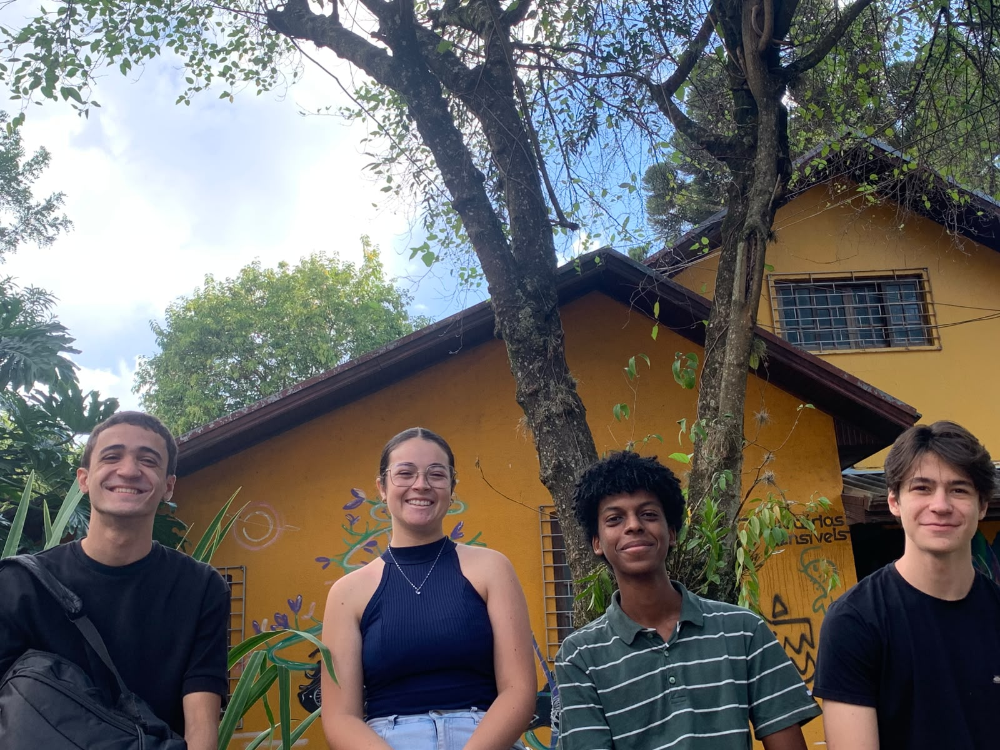

1972
Tudo o Que Você Podia Ser
Milton Nascimento e Lô Borges
Lançada durante a ditadura militar, a música reflete sobre possibilidades interrompidas, sonhos não realizados e os caminhos que poderíamos ter seguido.
Sinestesia · Prática Artística 2026
Uma apresentação musical sobre identidade,
mudança e sentimentos
Eixo 1
As músicas deste eixo abordam a construção da identidade, transformação pessoal e os caminhos que escolhemos ou deixamos de seguir.
1972
Milton Nascimento e Lô Borges
Lançada durante a ditadura militar, a música reflete sobre possibilidades interrompidas, sonhos não realizados e os caminhos que poderíamos ter seguido.
1972
Novos Baianos
Uma celebração da transformação e da descoberta constante. A música apresenta a identidade não como algo fixo, mas como um processo contínuo.
Eixo 2
Nem tudo aquilo que sentimos pode ser explicado com clareza. Este eixo reúne músicas que exploram o amor, o tempo, a impermanência e as emoções que escapam às definições simples.
1969
The Beatles
Composta por George Harrison, a canção fala sobre um amor que existe mesmo sem poder ser completamente explicado.
2005
Los Hermanos
Uma reflexão sobre a passagem do tempo, as mudanças inevitáveis da vida e a dificuldade de compreender certas experiências enquanto elas acontecem.

Sobre o projeto
O projeto surgiu a partir da reflexão sobre experiências de mudança, adaptação e descoberta vividas pelos integrantes da banda durante sua trajetória recente. A seleção do repertório buscou reunir músicas que dialogassem com essas questões e com o conceito do inefável.